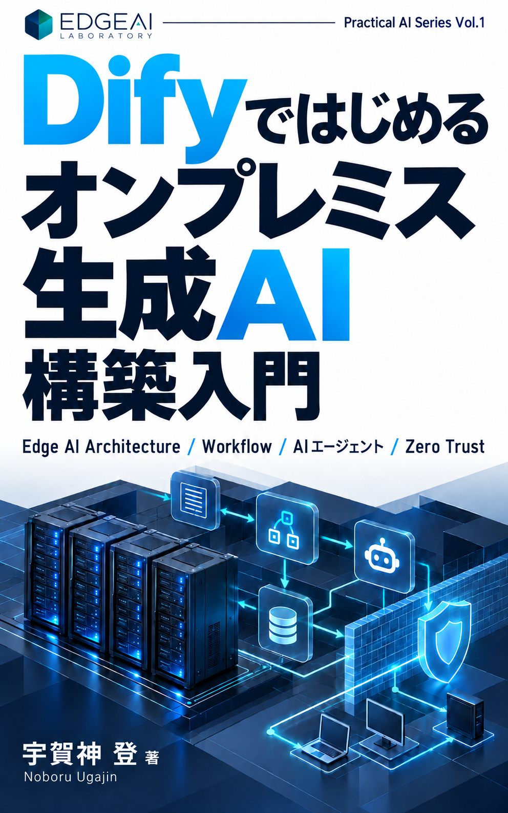
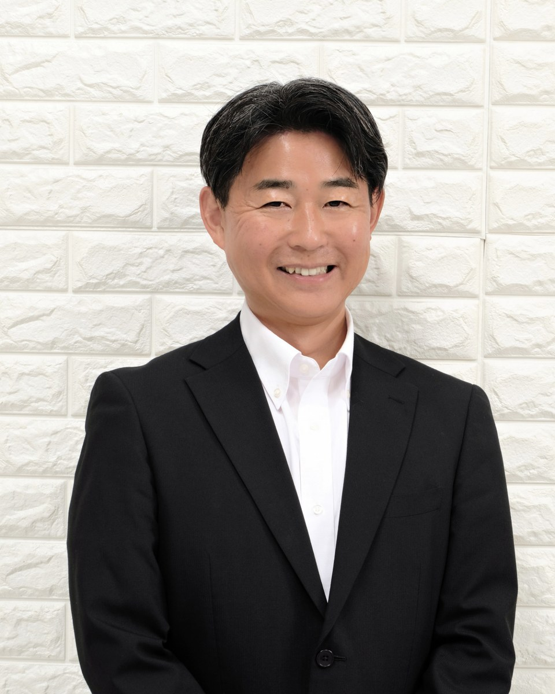

Edge AI
Researching AI that runs on edge devices and validating practical deployment and operations in real-world environments.
→EDGE AI / ON-PREMISES GENERATIVE AI / HYBRID CLOUD
EDGE AI LABORATORY researches and validates Edge AI architectures that combine On-Premises Generative AI, AI Agents, Data + AI, RAG, Hybrid Cloud, and Zero Trust, with a focus on security, operations, and practical enterprise use.
We design and validate enterprise AI environments by combining model runtimes, enterprise data, RAG, AI agents, networking, authentication and access control.
We evaluate technologies from a vendor-neutral perspective, focusing on what enterprises actually need.
Researching AI that runs on edge devices and validating practical deployment and operations in real-world environments.
→Researching secure on-premises and local generative AI platforms for enterprise use.
→Designing and validating AI agents that autonomously support enterprise business processes.
→Exploring vendor-neutral infrastructure architectures that combine on-premises and cloud environments for the AI era.
→Researching secure and effective ways to connect enterprise data and knowledge to generative AI and turn data into valuable answers and insights.
→EDGE AI LABORATORY is not built to promote any specific vendor or product. We evaluate the right combination of technologies based on objectives, constraints, security, and operational requirements.
Independent technology evaluation without vendor lock-in.
Emphasis on insights and lessons learned through real implementation.
Enterprise perspectives that include security and operations.
We combine technologies in working environments to validate architectures and operational approaches for enterprise use.
Building on-premises generative AI infrastructure and validating security, performance, and operational characteristics.
Researching AI agents that assist with email, documents, knowledge search, and other business processes.
Designing flexible AI platforms that combine cloud and on-premises resources without dependence on a single vendor.
Hands-on build procedures, validation results, and operational lessons are published on Ameba Blog.
We share insights from building, validating, and operating the technologies behind enterprise AI, including On-Premises Generative AI, AI Agents, Zero Trust, and Data + AI.
Published October 23, 2026 · Practical AI Series Vol.1
A practical introduction to building on-premises generative AI with Dify and Ollama
By Noboru Ugajin · Japanese-language edition
Build a local generative AI environment step by step, from Ubuntu Server and Docker to Ollama, Dify workflows and retrieval-augmented generation (RAG), using screenshots, commands and configuration examples.
Chapters 1–6 provide the foundation. Later chapters explore model routing, email classification and summarization, enterprise operations, and remote access with Cloudflare Zero Trust.
Kindle eBook · Written in Japanese. This is not an English translation.
See Amazon.co.jp for current pricing, availability and reading options.


宇賀神 登 · うがじん のぼる
While working in the design, implementation, and operation of enterprise IT infrastructure, I research Edge AI, On-Premises Generative AI, AI Agents, and Hybrid Cloud. I share practical approaches to enterprise AI based on hands-on implementation and validation.
Supporting the design, implementation, and operational improvement of enterprise IT infrastructure.
Continuously implementing and validating Edge AI and Generative AI technologies.
Sharing practical knowledge through blogs, books, and technical presentations.
For technical discussions, speaking requests, collaboration, or other inquiries, please contact info@edgeai-lab.com.